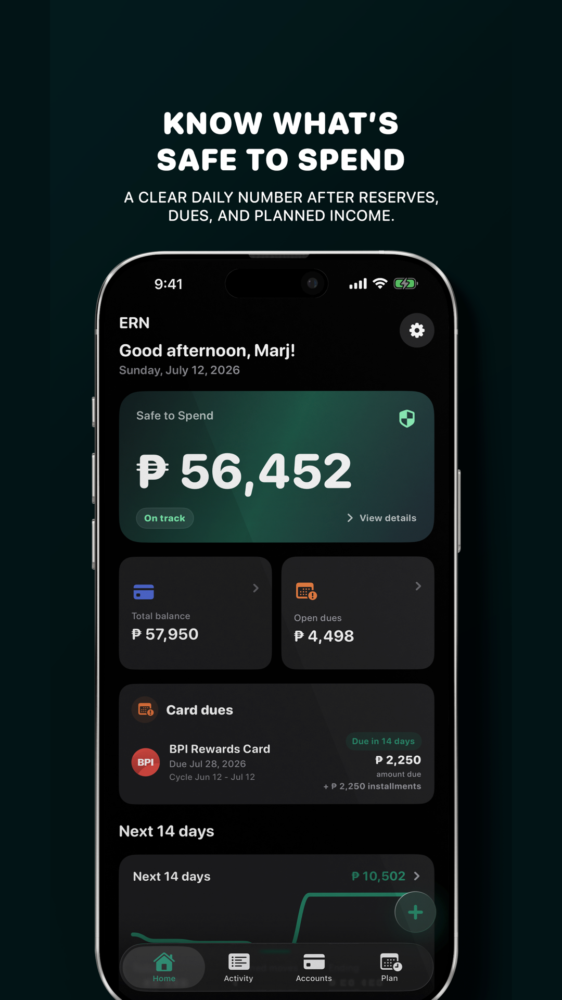

01 / App Store · Personal finance
ERN Finance
A privacy-first finance tracker that turns balances, bills, planned income, and savings into one clear safe-to-spend number.
- Offline-first tracking with backups and on-device storage
- Cash-flow planning, account tracking, bills, and goals
- Published iPhone app with an installable PWA companion
Capacitor · TypeScript · IndexedDB · iOS
View on the App Store
Private codebase